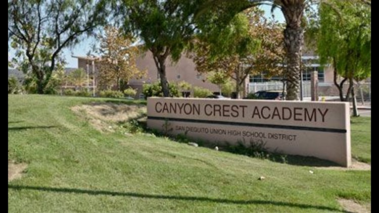
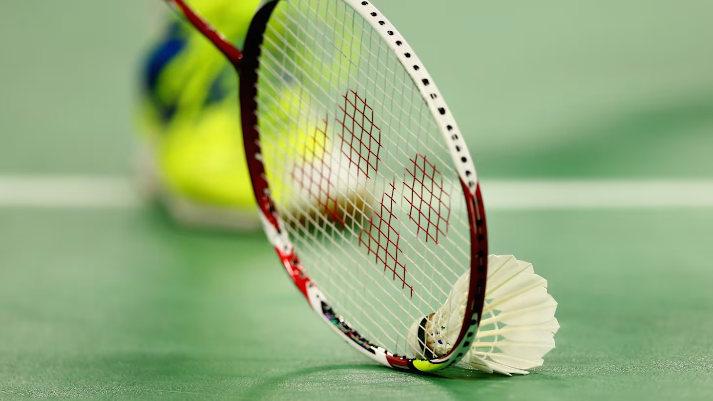

> [SYSTEM] INITIALIZING SHREYAS_HOSMANI_V1.0...
> [KERNEL] LOADING EDUCATION_INFORMATION...
> [DATA] READING FUN_FACTS.JSON...
> [RENDER] BOOTING IMAGE_RENDERER...
> [CSS] APPLYING CSS_STYLESHEET...
> [STATUS] FINAL SYSTEM CHECK...ALL SYSTEMS NOMINAL. LAUNCHING UI...

I was born in San Diego, and I have lived here my entire life. I attended elementary school at Design 39 up through 5th grade. Following that, I went to Oak Valley Middle School for one year in 6th grade. After 6th grade, I left Oak Valley and moved from Del Sur to Carmel Valley, where I went to Pacific Trails Middle School for 7th and 8th grade. Following middle school, I chose to attend Canyon Crest Academy. Currently, I am in the middle of my high school education, in 10th grade.

Outside of school, I enjoy exploring different hobbies. My favorite hobbies include martial arts, badminton, and coding. I have participated in martial arts for nearly a decade of my life, starting around kindergarten, up until now. I just recently got into playing badminton and have played for just under a year. Although I do not play for a team, I intend to try out next year. In programming, I have worked in a variety of programming languages, including Python, Java, JavaScript, C++, TypeScript, and more. I enjoy programming, especially because I am fascinated with automation, which got me into programming at around the 7th grade when I became interested in automating many different repetitive tasks.As I progress through my education, I continue to form new goals for myself, aiming to raise my personal standards. My main priority is to focus on my school work while at Canyon Crest Academy and try to maintain good grades. While my main focus is to maintain good grades, I always ensure to leave time for myself to relax. In the future, I hope to attend college and pursue a career in computer science or engineering. Overall, my goal with life is to try to live to my fullest and not end up in a cycle of monotony.